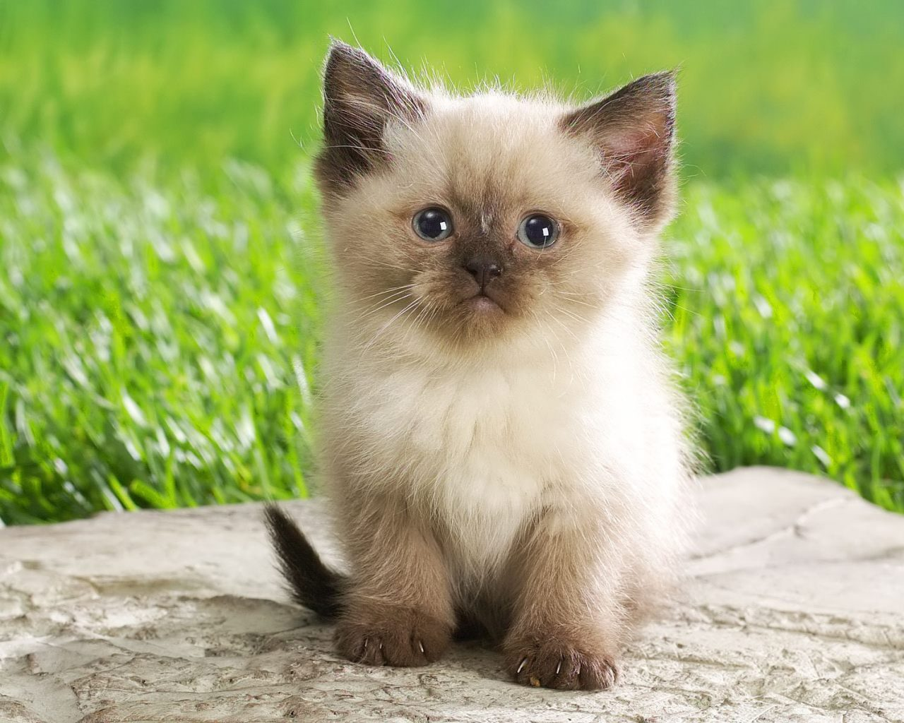

NOMBRE: Crispis EDAD: 1 año y 8 meses COLOR DE OJOS: azules

DESCRIPCIÓN: Es un gato tranquilo, le gusta la whiskas, tiene un hermano adoptivo gato llamado
Rayas.
Parece una bolita de pelos andante, le gusta cazar lagartijas y recostarse en el pasto. Su nombre se debe a
que
su pelaje parece leche con choco Krispis :), llegó cuando recién tenía unos días de nacido y ahora es muy
feliz.